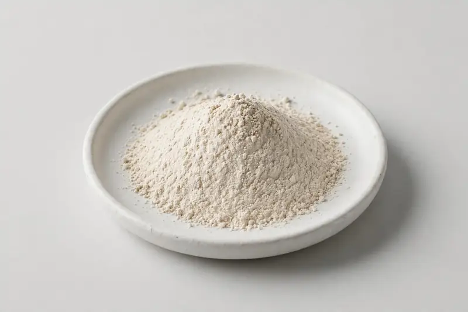

Dictyophora indusiata veiled lady mushroom fruiting body extract standardized to polysaccharides, positioned for immune and beauty formulations.

Overview
Bamboo fungus extract is a mushroom powder produced from the fruiting body of Dictyophora indusiata, the veiled lady mushroom, standardized to polysaccharides. Its dual gourmet and beauty positioning keeps it in demand across supplement and skin-nutrition concepts. As a Xi'an-based trading company, we source through vetted partner producers and give buyers a candid read on what a target specification can realistically deliver.
Specifications below reflect commonly requested options in the market — not a stock list. Share your target spec and we'll confirm exactly what we can supply, honestly.
| Specification | Details |
|---|---|
| Botanical identity | Dictyophora indusiata, fruiting body |
| Marker compound | Polysaccharides — commonly requested: 20-50% (UV); beta-glucan available as a secondary marker |
| Appearance | Fine powder, color typical of the extract |
| Mesh size | Typically 80–100 mesh (confirm per inquiry) |
| Testing | COA/TDS arranged on request; scope agreed per your spec |
Applications
Documentation
We don't claim in-house labs or certifications we don't hold. COA and TDS documents can be arranged on request, and testing scope is agreed against your specification before supply.
FAQ
Related products
Phellinus linteus
Key marker: Polysaccharides
View specs →Flammulina velutipes
Key marker: Polysaccharides
View specs →Taiwanofungus camphoratus
Key marker: Triterpenes / Antroquinonol
View specs →Sparassis crispa
Key marker: Beta-glucan
View specs →Tricholoma matsutake
Key marker: Polysaccharides
View specs →Send your target spec and volumes — we'll respond with a tailored quotation.
Request a Quote